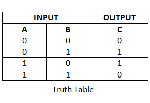

| Enigma Machine |
Ϗɐ⊕𝕤A simple and streamable data encrypter
|
Agenda
Rational
Why reinventing the wheel again ?
Requirements
- Small with no dependencies
- Compatible with Node.js' streams
- Enables encryption / decryption by chunks
- Two consecutive encryptions with the same key generates different outputs
NPM Package
Ϗɐ⊕𝕤
Basic algorithm
The message
Hello World !
H e l l o W o r l d !
01001000 01100101 01101100 01101100 01101111 00100000 01010111 01101111 01110010 01101100 01100100 00100000 00100001
The key
- Any binary data can be used as key
- A key is defined by its content and length
- Let's consider a simple example :
secret
s e c r e t
01110011 01100101 01100011 01110010 01100101 01110100
The XOR binary operator
- This operator is used to combine the bytes of the message and the key (the key is truncated or repeated to match the message length)
- It generates a new binary content
Encrypted message
H e l l o W o r l d !
01001000 01100101 01101100 01101100 01101111 00100000 01010111 01101111 01110010 01101100 01100100 00100000 00100001
s e c r e t | s e c r e t | s
01110011 01100101 01100011 01110010 01100101 01110100 01110011 01100101 01100011 01110010 01100101 01110100 01110011
⊕
; \x0 \xf \x1e \xa T $ \xa \x11 \x1e \x1 T R
00111011 00000000 00001111 00011110 00001010 01010100 00100100 00001010 00010001 00011110 00000001 01010100 01010010
Decrypted message
- To decrypt the message, the same operation is repeated with the encrypted message
; \x0 \xf \x1e \xa T $ \xa \x11 \x1e \x1 T R
00111011 00000000 00001111 00011110 00001010 01010100 00100100 00001010 00010001 00011110 00000001 01010100 01010010
s e c r e t | s e c r e t | s
01110011 01100101 01100011 01110010 01100101 01110100 01110011 01100101 01100011 01110010 01100101 01110100 01110011
⊕
H e l l o W o r l d !
01001000 01100101 01101100 01101100 01101111 00100000 01010111 01101111 01110010 01101100 01100100 00100000 00100001
👍 & 👎 of the basic algorithm
👍 simplicity & almost context-free
- The algorithm is really simple to implement and, consequently, fast
- Since it does not require the whole message to encrypt one byte (only the key offset is needed), it works with chunks
👍 key definition
- There is no constraint on the key
- It can be of any type and any size
👎 key resilience
- Even if the key is altered, the message can still be partially decrypted
; \x0 \xf \x1e \xa T $ \xa \x11 \x1e \x1 T R
00111011 00000000 00001111 00011110 00001010 01010100 00100100 00001010 00010001 00011110 00000001 01010100 01010010
s e c | s e c | s e c | s e c | s
01110011 01100101 01100011 01110011 01100101 01100011 01110011 01100101 01100011 01110011 01100101 01100011 01110011
⊕
H e l m o 7 W o r m d 7 !
01001000 01100101 01101100 01101101 01101111 00110111 01010111 01101111 01110010 01101101 01100100 00110111 00100001
sec
- When trying to guess the key, the more bytes are found, the more characters of the original message are correct
👎 key length
- Since the key is repeated to match the message length, the smaller the key, the weaker it is
- If the key is longer than the message, it is not necessary to know the extra bytes
👎 Too simple
- Provided you can recognize the partially decrypted message, a 2 bytes key requires a maximum of 256 + 256 attempts where one would expect 256 * 256
Advanced algorithm
Advanced algorithm
- Several mechanisms are added to solve the weaknesses of the basic algorithm
- The efforts are focused on the key :
- The exact key must be used to decrypt the message
- The key itself is combined with a hash to generate the XOR mask
Salting the key
- The key is concatenated with random bytes
- Those bytes are saved in the encrypted message
Adjusting the salted key length
- The number of bytes added to the key depend on its length
- The goal is to produce a salted key length where the modulo 64 equals 63
Hashing the salted key
- The resulting key is digested to produce a sha-512 hash
- This hash is 64 bytes long